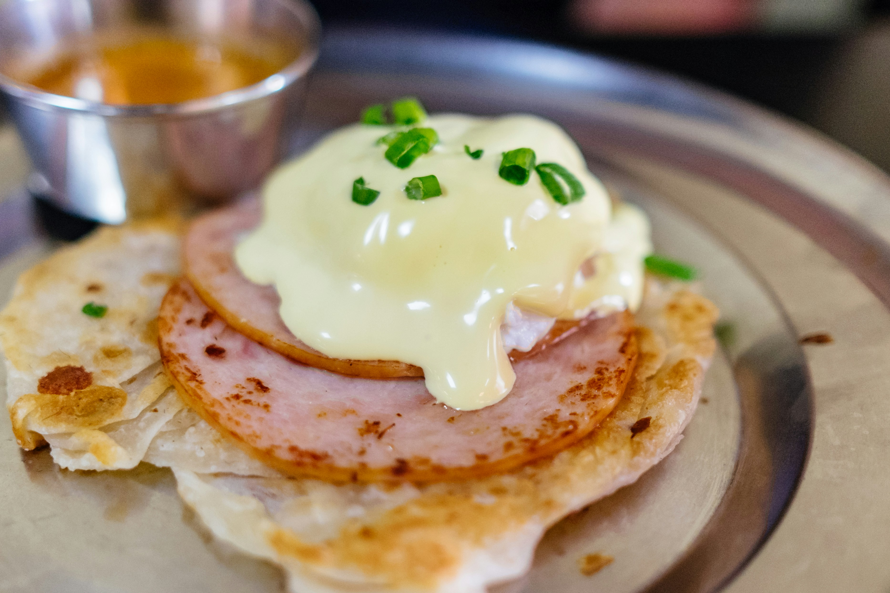

Welcome to The Partial Pantry!
Whether you want to use the ingredients you have or just discover new recipes, The Partial Pantry is here to help.
Recipe of the Day

Eggs Benedict
Recipe data will be provided by Spoonacular Food API .
Whether you want to use the ingredients you have or just discover new recipes, The Partial Pantry is here to help.

Recipe data will be provided by Spoonacular Food API .